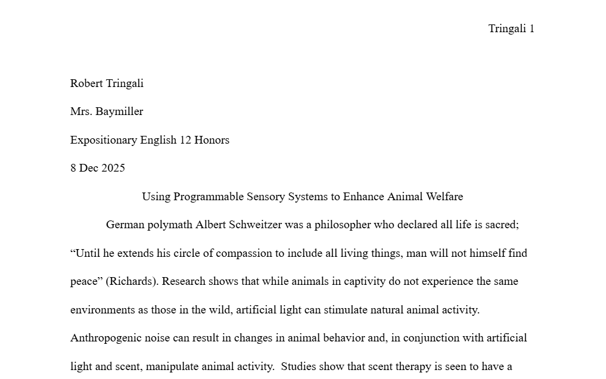
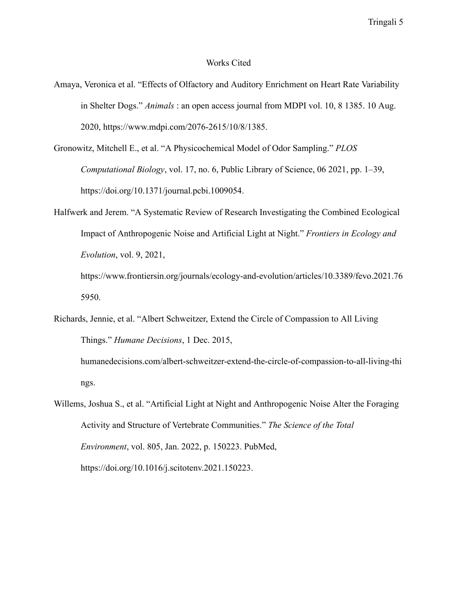
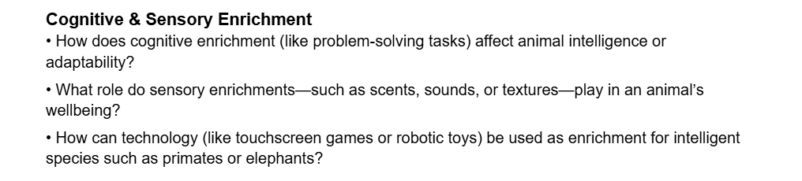

Animal Welfare Essay

Animal Welfare EssayProject Description:
This paper highlights key points in the argument over animal welfare while in captivity. It specifically touches on the uses of programmable sensory systems to make zoo living habitats more humane to live in.
Concepts Learned:
- Quote Integration: Throughout this paper, I use quote integration to make a more smooth flowing paper.
- Correct Semicolon Usage: Semicolons are used in the essay, adding another level of proficiency.
- Author et. al: For MLA citations, “el. al” was used many times to indicate that there were three or more authors without the need to list all of them.
Challeges & Solution:
- The Challege: Trying to get credible information, I contacted a zoo about their use of sensory technology, but got no response.
- The Solution: I collaborated with a team to increase our chances of getting a response from one of many zoos.
- The Challenge: I really wanted to use more sophisticated punctuation and advanced syntax to portray more intelligent findings.
- The Solution: Using resources provided by my teacher, I was able to improve my writing skills in many areas.
- The Challenge Having to synthesize different resources proved difficult as they did not voice their findings and research in similar ways.
- The Solution: By breaking down content into more manageable pieces, I was able to piece the various sources together.
Habits of Mind in Action:
- Connect: Connecting to animal caretakers and their hand in what is introduced to animals in captivity was critical in writing a well-planned essay.
- Collaborate: I used the help of classmates to help gather credible information.

